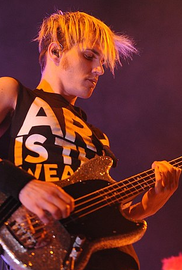

My Chemical Romance er einn af vinsælustu hljómsveitum í heiminum og hefur áhrif á tónlistarsköpun og tónlistarsviði á öllum löndum, meðal annars í Íslandi. Hljómsveitin var stofnuð árið 2001 í New Jersey í Bandaríkjunum og var fyrst þekkt fyrir sitt pop punk tónlistarsnið. Á seinustu árum hafa þeir þó átt sér stað í rock og alternatífvörnum, og hafa átt stórt hljóðheimsveldi í dag.
My Chemical Romance hefur frumleitt sjö aldir, allt frá "I Brought You My Bullets, You Brought Me Your Love" frá árinu 2002 til síðustu plata þeirra "Danger Days: The True Lives of the Fabulous Killjoys" frá árinu 2010. Hljómsveitin hefur náð margum verðlaunum og lofsöngum, og hafa átt sér stað sem aðalhljómsveit margra unglinga um allan heim.
My Chemical Romance hefur heimsótt Ísland tvisvar, fyrst árið 2007 og svo árið 2011. Á fyrstu heimsókninni spiluðu þeir í Egilshöllinni í Reykjavík, sem var haldið í mars árið 2007. Þeir spiluðu svo á ný árið 2011 á þeirri sömu stað og var haldið í ágúst þess árs. Þetta var stór viðburður fyrir tónlistarfólk á Íslandi, sem varð fyrir miklum áhuga á hljómsveitinni.
Hljómsveitin hefur haft mikil áhrif á tónlistina á Íslandi og margir íslenskir hljómsveitar hafa látist hrósa þeim. Þeir hafa einnig haft stóra áhrif á tískuminningu á Íslandi og margir unglingar hafa fylgst með tísku klæðnaði My Chemical Romance.
Allt í allt eru áhrif My Chemical Romance á tónlistina og menningu á Íslandi stór og þeir eru enn í dag einn af vinsælustu hljómsveitunum á Íslandi. Mjög margir tónlistarfólk og unglingar halda þeim fram sem stóra áhrifavald í tónlistarheiminum og þeir eru nánast þekktir fyrir sitt stórskemmtilega og energískt tónlistarsnið.
Plötur
The Black Parade
Three Cheers For Sweet Revenge
Danger Days
May Death Never Stop You
Meðlimir
Gerard Way er frægur söngvari og tónlistarmaður sem er þekktur víða um allan heim fyrir sína tónlist og persónuleika. Hann er stofnandi og forsöngvari hljómsveitarinnar My Chemical Romance sem hefur náð miklum vinsældum á öllum heimshlutum. Fyrir utan tónlistina hefur Gerard Way einnig verið virkur í hönnun og listrænum sköpunum og hefur skrifað grafískar sögur sem hafa verið gefnar út sem bækur. Á Íslandi er Gerard Way líka mjög þekktur og hefur haft mikil áhrif á tónlistina og listræna menningu hér á landi. Mjög margir tónlistarfólk og unglingar á Íslandi hafa fylgst með starfi hans og hlustað á tónlistina hans sem hefur náð miklum vinsældum á þessu svæði.
Ray Toro er gítarleikari og tónlistarmaður sem er þekktur sem einn af stofnendum hljómsveitarinnar My Chemical Romance. Hann er þekktur fyrir sitt ómissandi hlutverk í tónlistinni og hefur haft stóra áhrif á tónlistarheiminn. Hann er einnig þekktur fyrir sinn einstaka og víðtæka stíl sem er stundum lýst sem "prófetískur" og hefur haft mikil áhrif á unga tónlistarmenn á Íslandi og víðar í heiminum. Hann hefur verið í samstarfi við margar aðrar tónlistarmenn og hefur einnig gert samstarf við tónlistarmenn á Íslandi. Ray Toro er þekktur sem einn af þeim gítarleikurum sem hefur tekið tónlistina í nýjar áttir og er enn í dag virkur í tónlistarheiminum og áhrif hans eru enn áberandi.

Mikey Way er tónlistarmaður og bassaleikari sem er þekktur sem einn af stofnendum og upprunalegum meðlimur hljómsveitarinnar My Chemical Romance. Hann er einnig bróðir Gerard Way, forsöngvarans í hljómsveitinni. Mikey Way hefur verið virkur í tónlistarheiminum frá því að hann var ungur og hefur spilað í mörgum tónlistarverkefnum ásamt öðrum tónlistarmönnum. Á meðal hans hefur hann einnig hlotið frægð fyrir sitt samstarf við tónlistarstjörnu þegar hann spilaði í hennar hljómsveit. Mikey Way er þekktur fyrir sitt sérstaka bassaleikarstíl sem hefur haft áhrif á mörg tónlistarverkefni og unga tónlistarmenn á Íslandi og víðar í heiminum. Hann er enn í dag virkur í tónlistarheiminum og hefur áhrif hans enn áberandi.
Frank Iero er tónlistarmaður og söngvari sem fæddist í Bandaríkjunum árið 1981. Hann er þekktastur fyrir að hafa verið hluti af hljómsveitunum My Chemical Romance og Leathermouth. Frank hefur einnig gefið út tvo sólóplötur og starfað sem tónlistarframleiðandi. Árið 2016 hóf hann tónlistarferil sinn á Íslandi með hljómsveitinni The Patience. Þeir tóku upp plötu sinni í sveitinni Sundlaugin á Mosfellsbæ og tóku þar með á móti víðtækum lofum. Frank hefur einnig heimsótt Ísland áður og talað um hversu mikið hann elskar landið og það hversu mikilvægt er að varðveita náttúruna þar.